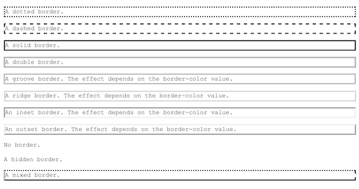

The border is the edge surrounding the element. It can have many different colors, widths, and styles, such as solid or dashed.
Here is an example of border styles:

What is a margin?
Margin is the area between the border and another element, or the walls of the document. It can be used for positioning using margin-top, margin-right, margin-bottom, or margin-left, specified in pixels, percentages, or ems. It is important to remember that if you add a margin-left, your element will move to the right, as this adds space between the wall and the left side of the element. You can also add a negative margin, which will decrease the whitespace. For example, a negative margin-top will move your element closer to the top of the document. Setting margin to auto can be used to center your element, by putting equal whitespace/margins to the left and the right of the element.
What is padding?
Padding is the area between the content and the border. It also increases the size of the element. Like margin, there is padding-top, padding-right, padding-bottom, and padding-left. The same intuition must be used when determining the amount of padding wanted.